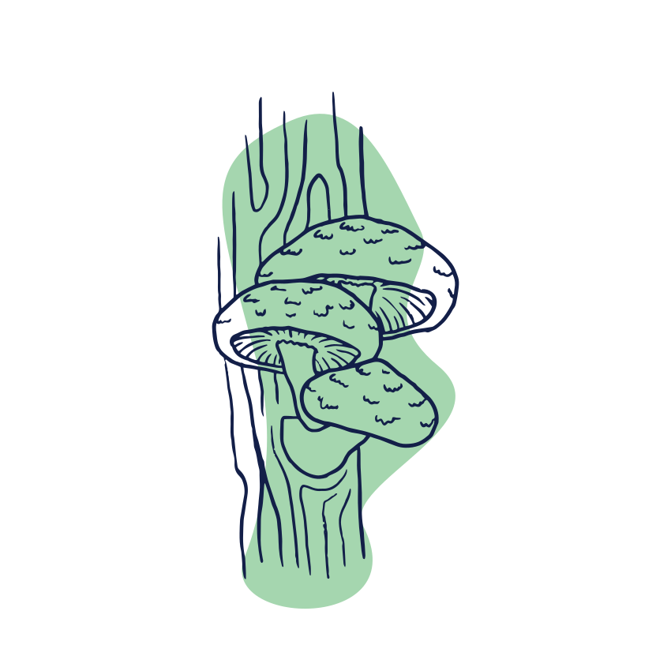

Bier
Bij de Ceuvel schenken ze voornamelijk bier van Gulpener.
Gulpener verbouwd de hop, tarwe en gerst op een duurzame manier in Limburg.
Gulpener heeft op al hun biertjes een milieukeur-certificaat. De meeste speciaal
biertjes van Gulpener zijn zelfs biologisch!
Naast Gulpener schenken ze ook speciaal biertjes van lokale brouwers
in Amsterdam die ook op een duurzame manier bierbrouwen. Dit steunt de
lokale mens en vervuilt minder milieu op gebied van vervoer.
Koffie
De Ceufel haalt hun koffie bij Kaap Koffie. Kaapkoffie koopt rechtstreeks de
bonen bij een Colombiaanse koffieboer en betaald daar een goede prijs voor.
De koffie wordt op een biologische manier verbouwd en word vervolgens vervoert
op een houten schuit die over de oceaan voort door middel van wind stroming
man/vrouwkracht.
Kaap koffie vervoert de koffie in recyclebare tonnen en zakken.
De prut die overblijft van de koffie wordt vervolgens bij de planten gegooid
om zo weer wat terug te geven aan de natuur.
Zuivel
De Ceuvel is sinds 1 november volledig veganistisch. In 1 liter koemelk
wordt ongeveer 1000 liter water gebruikt dat is ongeveer 130 liter water
per cappuccino. Door havermelk te gebruiken maken ze daar verandering in.
In plaats van 130 liter per kopje gebruik je 16,5 liter. Daarnaast stoot
het ook 80% minder broeikasgassen uit.
Meubilair
Logic Works is verantwoordelijk voor het maken van de bootbankjes op hun terras
maar ook de rest van het terras meubilair.
Flesj is verantwoordelijk voor de (LED) lampen in het café.
Het zijn oude limonade flesjes.
Wouter Valkenier van Studio Valkenier is verantwoordelijk voor het ontwerpen
en bouwen van het gebouw. Hij heeft onder andere Hanneke’s Boom en Bret gebouwd.
Het pand bestaat voornamelijk uit hergebruikte materialen, Bijvoorbeeld meerpalen
uit de have van Amsterdam, Een oude strandkeet, houte vloer uit een oude gymzaal etc.
Vlees
Op Dit moment is de Ceuvel volledig vegetarisch. Ze hebben een tijdje ganzenvlees
van Schiphol geserveerd. Dit is vlees van ganzen die gejaagd worden omdat ze anders in
de motoren van de vliegtuig terecht komen. Dit vlees werd geserveerd omdat er het vlees
anders weg werd gegooid en zo een bewustzijn te creëren van dierenleed, het vliegverkeer
en duurzaamheid. Momenteel wordt het niet meer geserveerd.

Paddenstoelen
Omdat de Ceuvel met veganistische producten werkt, werken ze weer veel met eiwitrijke
producten zoals paddenstoelen. De paddenstoelen die gebruikt worden komen voornamelijk
bij Mycophilia vandaan. De paddenstoelen worden verbouwd in een oude zeecontainer op
houtsnippers en spelt. De groei wordt op een duurzame manier gekweekt door middel van
biomeiler: een hoop versnipperd hout dat warmte genereerd door compostering.
Frisdrank
De Ceuvel maakt hun frisdranken zelf met biologische siropen van Lesilie Dronkers
(Saru Soda) Met de smaken Vlierbloesem, Gember-Citroen en Rabarber. En door middel
van koolzuur aan het Tapwater te geven heb je ook je Sinas of Cola.
Sterke Drank
Naast alles wat De Ceuvel serveerd komt alles uit Nederland behalve de rum.
De rum komt uit de Caraïben. Dat word met de 32 meter lange Zeilschip ‘Tres Hombres’
Vervoert naar nederland. Dat is pas ‘Fair Transport’.
Gebak
De Lekkerstukken taart die de Ceuvel biedt kom bij Sharp Sharp vandaan.
De bakkers van Sharp Sharp zijn Renate en Frank die met dadels, noten ahornsiroop
en vruchten de gebakjes veganistisch, suikervrij en glutenvrij maken. Lekker en Gezond!
Groentes
De Groentes komen bij verschillende boeren vandaan.
Om beter het verhaal te begrijpen achter hun producten hebben ze 2 jaar lang bij Mijn
Stadstuin samen met een boer groentes verbouwd. Dat was geen succes voor de boer dus
lieten ze de landbouw over aan de boer.
Op een minuut afstand ligt 50/50 Green. Zij verbouwen niet alleen biologische seizoen
producten maar werkt ook als een leerbedrijf. Die voor mensen met een afstand op de
arbeidsmarkt werkervaring op laten doen, zodat ze langzamerhand weer mee kunnen draaien
met de samenleving.
Daarnaast heeft de Ceuvel ook een kas op het dak waar ze verse kruiden circulair
aquaponics systeem verbouwen.
Wijn
Biologische wordt gemaakt door geen pesticiden en kunstmatige meststoffen toe te voegen.
Natuurwijn zorgt er ook nog voor dat de wijn niet wordt aangezuurd of aangezoet en zorgt voor
de natuurlijkste wijn die je kan krijgen.
Deze wijnen halen ze bij Wijnhandel Vleck. Zij hebben contact met alle boeren en weten precies
waar een hoe de wijn gemaakt wordt ook wordt er gebruik gemaakt van vacuümverpakte wijnzakken
in plaats van wijnflessen. Flessen nemen te veel ruimte in zijn zwaar en erg breekbaar.
Kombucha
Hun oude Chef Nico brouwt de kombucha van de Ceuvel. Hij gaf zijn baan op dom zijn droom
achterna te gaan (het verbouwen van kombucha).
Kombucha is een Chinees drankje dat al eeuwen bestaat. Het is een gefermenteerd drankje
dat gemaakt is op basis van thee, water en suiker. Het is erg gezond en bijzonder van smaak.